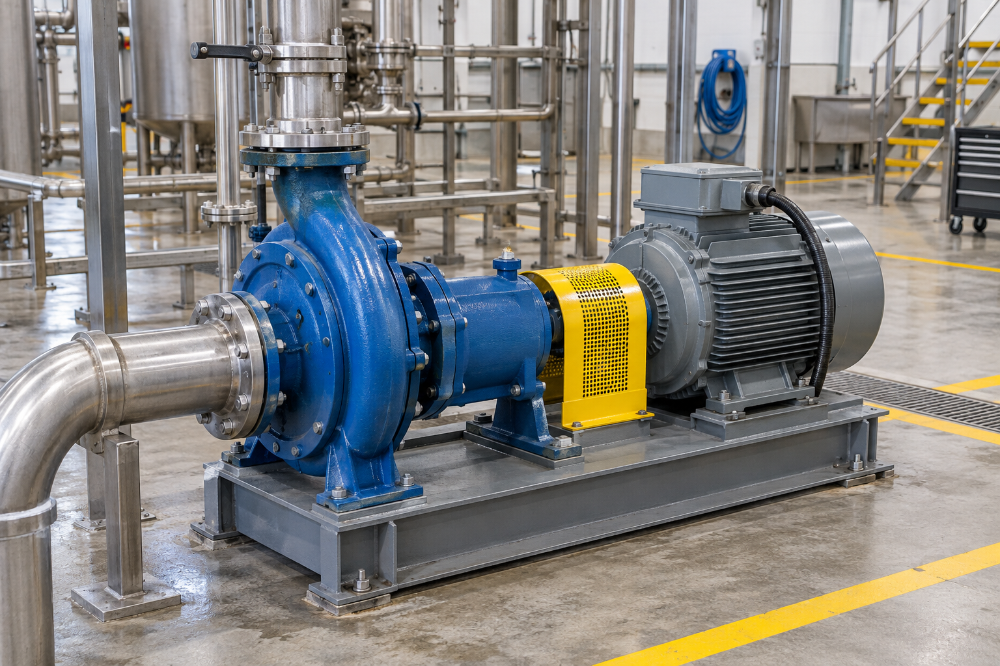
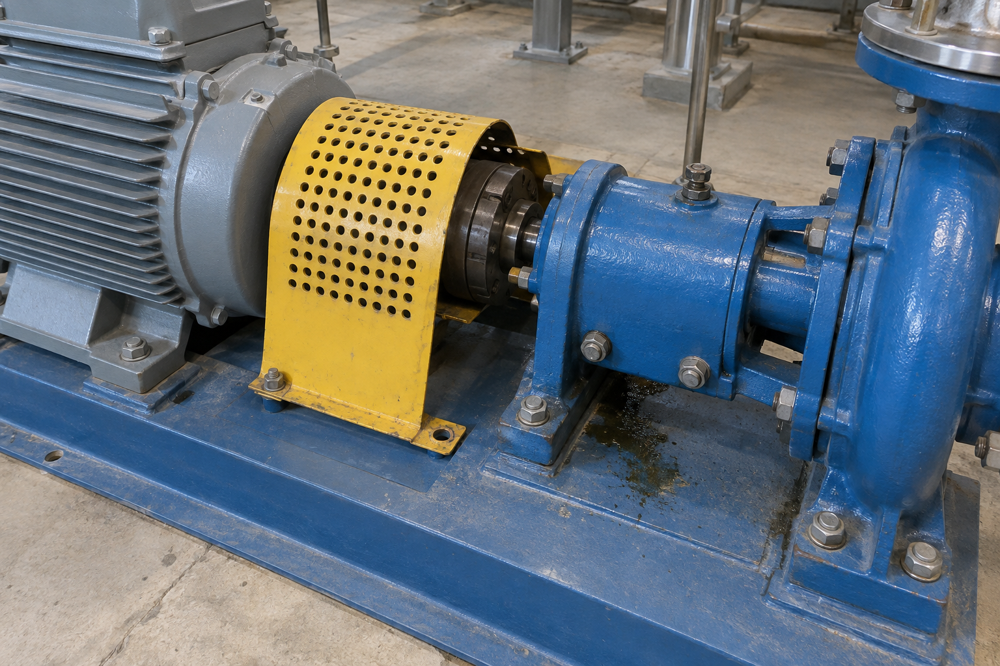
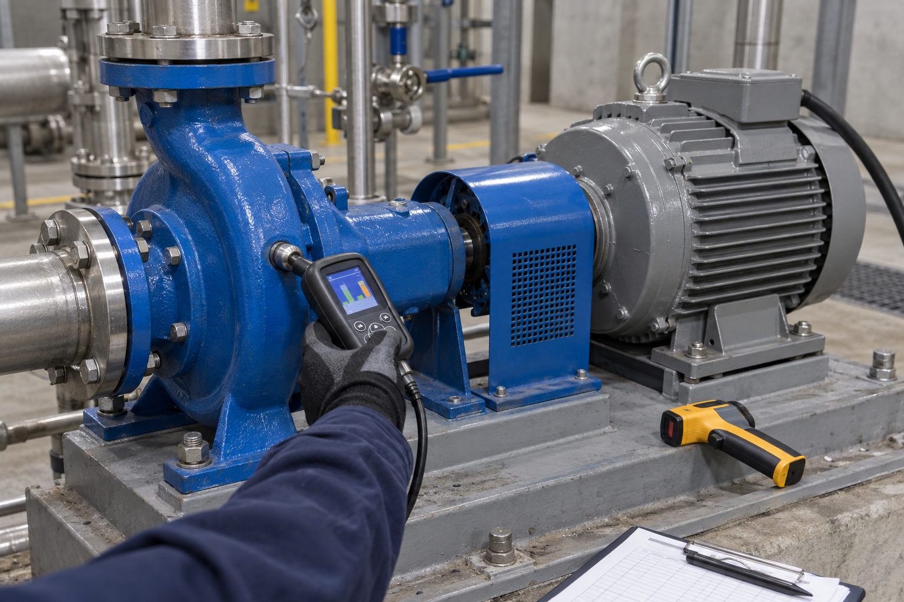

NM4 · Unidad 3 · Clase 6 · 4°A Mecánica Industrial · 3 min
Escribir en el trabajo: el informe técnico
Transformaremos una bitácora, fotografías y mediciones de un conjunto motor–bomba en una decisión escrita para la jefatura.
Caso ficticio MI-PVL-DIA-BP04 · imágenes originales generadas con IA.

¿Autorizarías el arranque?
5 min
Decide primero
La producción necesita BP-04, pero el resguardo está desplazado, falta una fijación y hay una huella de lubricante.
En el cuaderno: «Sí», «No» o «Falta información» y una razón basada en lo que realmente se observa.
Contar no es informar
5 min«La bomba anda muy mal y parece peligrosa».
«BP-04 registró 9,6 mm/s RMS y 82 °C en el rodamiento del lado del acoplamiento».
La segunda versión permite comprobar el dato, compararlo con un criterio y decidir una acción.
Objetivo de la clase
3 minProducto: un informe compartido o individual, guardado y entregado en Estudia CEST.
¿Qué hace un informe técnico?
4 min1. Registra
Qué equipo se revisó, dónde, cuándo y con qué instrumentos.
2. Compara
Relaciona la evidencia con un límite, manual, plan o norma.
3. Recomienda
Propone una acción que la empresa pueda ejecutar y comprobar.
Escribes para que alguien decida
4 minQuien escribe
El equipo técnico que observó, midió y registró la evidencia.
Quien recibe
La jefatura que debe decidir si detiene, repara, mantiene o autoriza el equipo.
Por eso no basta con opinar: cada afirmación importante debe poder rastrearse a una foto, medición o documento.
El caso: conjunto motor–bomba BP-04
5 minLa empresa necesita decidir si BP-04 puede volver al servicio. Ustedes recibirán una bitácora, tres fotografías, límites internos y un hallazgo resuelto como modelo.
Doce páginas, cuatro bloques
4 minIdentificación
Portada y datos del documento.
Propósito
Resumen, introducción y objetivos.
Evidencia
Mediciones, esquema, fotografías y orden de trabajo.
Decisión
Hallazgos, conclusión, comprobaciones y firmas.
Una foto sola no demuestra el diagnóstico
5 min
Cadena de evidencia
- Foto: ubica componente y condición.
- Bitácora: entrega hora, punto y valor.
- Criterio: indica qué debería cumplirse.
- Hallazgo: explica la diferencia y propone acción.
Un hallazgo responde cinco preguntas
5 minCondición
¿Qué ocurre?
Criterio
¿Qué debería ocurrir?
Causa
¿Qué la explica, si hay evidencia?
Efecto
¿Qué puede provocar?
Recomendación
¿Qué se hará y comprobará?
De la nota rápida a la redacción técnica
4 minNo se inventó la causa. Se transformó la observación en una condición precisa y comprobable.
Ingresa y elige modalidad
2 minestudiacest.com/nm4 → Clase 6 → 4°A Mecánica Industrial
Ingresa con tu RUT. Elige Individual o En pareja. En pareja, escribe el RUT del compañero: ambos verán el mismo borrador y harán una sola entrega.
Abrir el informe →Completa 20 campos obligatorios
38 minRevisión rápida antes de entregar
3 minEvidencia
¿Cada cifra aparece en la libreta o en una ficha?
Criterio
¿Explicaste qué debía cumplirse?
Decisión
¿La recomendación dice qué hacer y cómo verificarlo?
Entrega: cuando el sistema confirme, el informe quedará bloqueado y aparecerá como entregado al profesor.